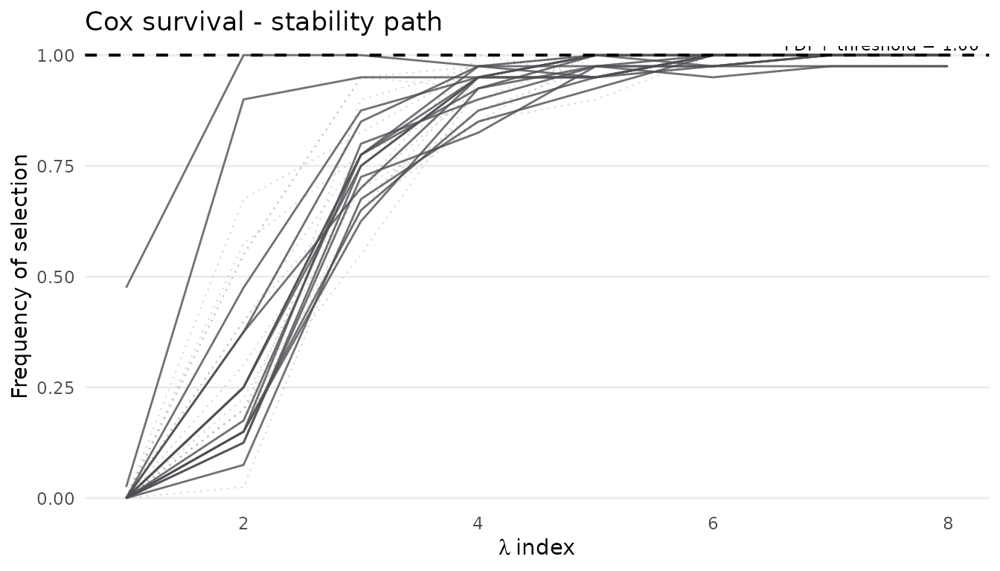
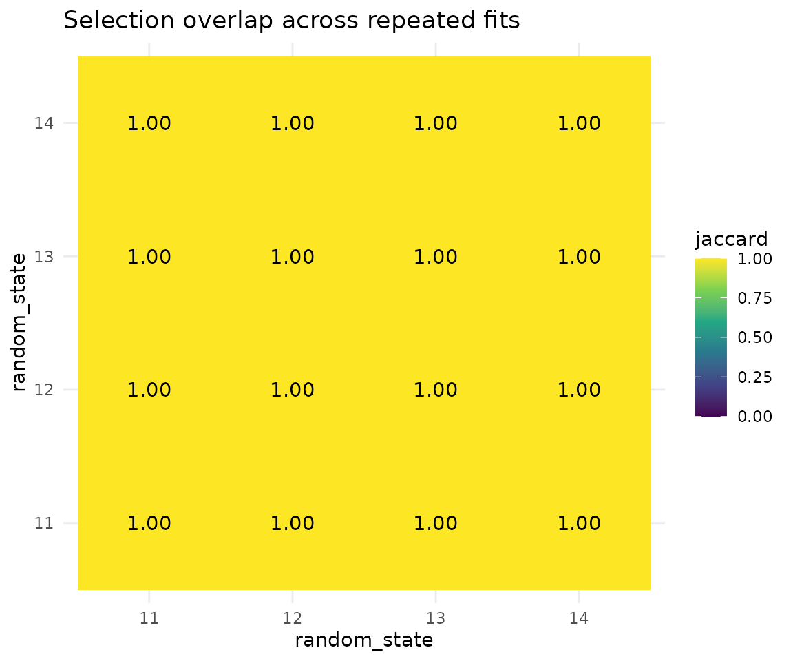
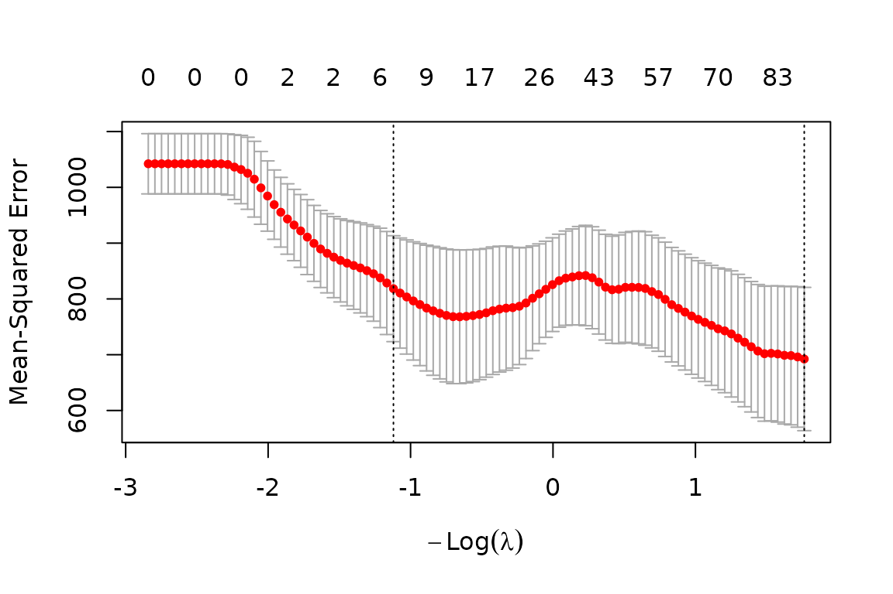
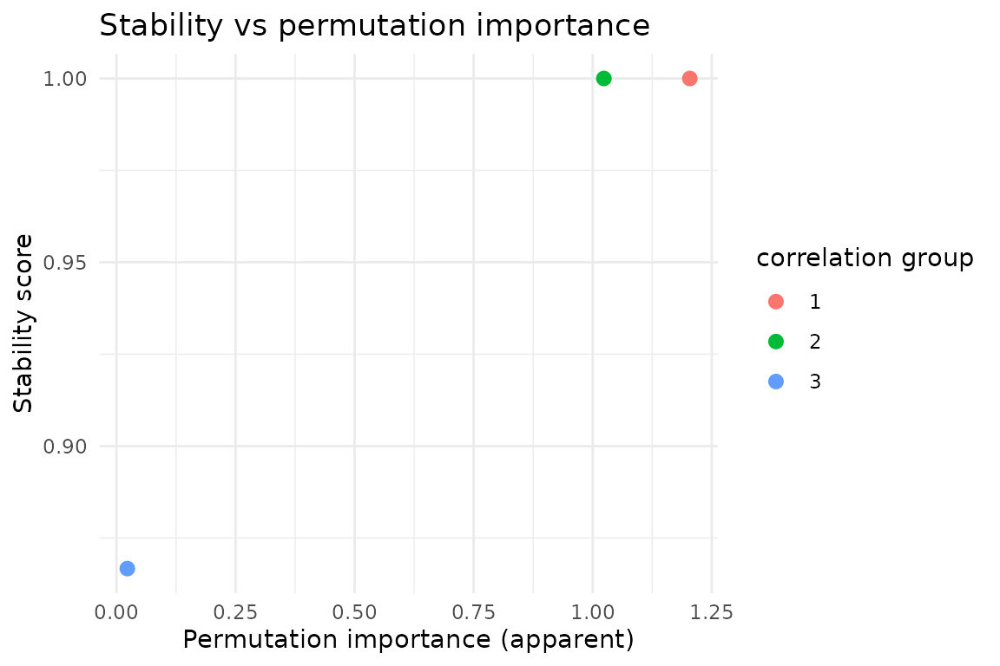

Contents
- 1 Scope of this vignette
- 2 Cox proportional-hazards STABL
- 3 Multinomial and sPLS-DA classification
- 4 Knockoff artificial features
- 5 Grouped bootstrap for repeated measures
- 6 Reproducibility across repeated fits
- 7 Exporting results to disk
- 8 Outer cross-validation for multi-omic workflows
- 9 Cooperative coefficient paths
- 10 Interpreting a fitted selection
- 11 Related vignettes
1 Scope of this vignette
The introductory and multi-omic vignettes describe the core Gaussian
and binomial workflows. This vignette documents additional
stablr capabilities that are easy to miss when reading only
the quick-start paths. The topics and the corresponding functions are
listed in the table below.
| Topic | Functions |
|---|---|
| Survival STABL | stabl_fit(family = "cox") |
| Multinomial classification | stabl_fit(family = "multinomial") |
| sPLS-DA classification | base_learner = "splsda" |
| Artificial features |
artificial_type = "random_permutation",
"knockoff", "knockoff_equi",
"knockoff_mvr", or NULL
|
| Grouped bootstrap |
sample_groups argument of stabl_fit()
|
| Reproducibility metrics |
jaccard_similarity(),
adjusted_similarity()
|
| Disk export |
export_stabl_to_csv(),
save_stabl_results()
|
| Outer multi-omic CV | stabl_multiomic_cv() |
| Cooperative diagnostics |
get_cooperative_features(), plot() on
native fits |
| Biomarker interpretation | stabl_interpret() |
The examples use small simulated data so that the vignette remains
fast during R CMD check. The package is loaded as
follows.
2 Cox proportional-hazards STABL
For time-to-event outcomes, a survival::Surv object is
passed as y and family = "cox" is set. Row
names of y must match rownames(x).
The following commands simulate a small survival dataset with signal in the first two features and construct the lambda grid.
library(survival)
n <- 80
p <- 15
ids <- paste0("s", seq_len(n))
x_cox <- matrix(
rnorm(n * p), nrow = n,
dimnames = list(ids, paste0("g", seq_len(p)))
)
# Plant signal in first two features
linpred <- 0.9 * x_cox[, 1] - 0.7 * x_cox[, 2]
y_cox <- Surv(time = rexp(n, exp(linpred)), event = rbinom(n, 1, 0.75))
rownames(y_cox) <- ids
lambda_cox <- auto_lambda_grid(x_cox, y_cox, family = "cox", n_lambda = 8)The linear predictor involves the first two features only, so a stable selection procedure is expected to recover them.
The model is fitted with 40 bootstrap replicates and random-permutation artificial features.
fit_cox <- stabl_fit(
x = x_cox,
y = y_cox,
lambda_grid = lambda_cox,
family = "cox",
n_bootstraps = 40L,
artificial_type = "random_permutation",
random_state = 42L
)
#> Warning: from glmnet C++ code (error code -6); Convergence for 6th lambda value
#> not reached after maxit=100000 iterations; solutions for larger lambdas
#> returned
#> Warning: from glmnet C++ code (error code -6); Convergence for 6th lambda value
#> not reached after maxit=100000 iterations; solutions for larger lambdas
#> returned
#> Warning: from glmnet C++ code (error code -6); Convergence for 6th lambda value
#> not reached after maxit=100000 iterations; solutions for larger lambdas
#> returned
#> Warning: from glmnet C++ code (error code -7); Convergence for 7th lambda value
#> not reached after maxit=100000 iterations; solutions for larger lambdas
#> returned
#> Warning: from glmnet C++ code (error code -6); Convergence for 6th lambda value
#> not reached after maxit=100000 iterations; solutions for larger lambdas
#> returned
#> Warning: from glmnet C++ code (error code -6); Convergence for 6th lambda value
#> not reached after maxit=100000 iterations; solutions for larger lambdas
#> returned
#> Warning: from glmnet C++ code (error code -7); Convergence for 7th lambda value
#> not reached after maxit=100000 iterations; solutions for larger lambdas
#> returned
#> Warning: from glmnet C++ code (error code -7); Convergence for 7th lambda value
#> not reached after maxit=100000 iterations; solutions for larger lambdas
#> returned
#> Warning: from glmnet C++ code (error code -6); Convergence for 6th lambda value
#> not reached after maxit=100000 iterations; solutions for larger lambdas
#> returned
#> Warning: from glmnet C++ code (error code -8); Convergence for 8th lambda value
#> not reached after maxit=100000 iterations; solutions for larger lambdas
#> returned
get_feature_names(fit_cox)
#> character(0)
head(sort(get_importances(fit_cox), decreasing = TRUE), 6)
#> g1 g2 g3 g4 g5 g6
#> 1 1 1 1 1 1The output lists the selected feature names, followed by the six
features with the largest stability importances. At this small sample
size the FDR threshold saturates at 1, so the selection set can be
empty; the planted features g1 and g2 are
instead recovered in the sorted importances, where they are expected to
rank at the top.
The stability path makes the same comparison visible: at the sparse end of the lambda grid the planted features lift away from the null background, while at the saturated end every curve approaches the FDR upper bound (dashed line at 1).
plot_stabl_path(fit_cox, title = "Cox survival - stability path")
3 Multinomial and sPLS-DA classification
Multinomial outcomes use a named factor y. The stability
matrix has one row per feature, and importances aggregate across
classes.
The following commands simulate a three-class problem with weak class signal in the first feature and fit the multinomial model.
n <- 90
p <- 12
ids <- paste0("s", seq_len(n))
x_multi <- matrix(
rnorm(n * p), nrow = n,
dimnames = list(ids, paste0("m", seq_len(p)))
)
y_multi <- factor(sample(c("A", "B", "C"), n, replace = TRUE), levels = c("A", "B", "C"))
names(y_multi) <- ids
# Weak class signal from first feature
x_multi[y_multi == "B", 1] <- x_multi[y_multi == "B", 1] + 1.5
x_multi[y_multi == "C", 1] <- x_multi[y_multi == "C", 1] - 1.5
lambda_multi <- auto_lambda_grid(x_multi, y_multi, family = "multinomial", n_lambda = 6)
fit_multi <- stabl_fit(
x = x_multi,
y = y_multi,
lambda_grid = lambda_multi,
family = "multinomial",
n_bootstraps = 30L,
artificial_type = "random_permutation",
random_state = 1L
)
get_feature_names(fit_multi)
#> character(0)The printed vector contains the features selected by the multinomial
fit. Because the class signal is confined to feature m1,
that feature is expected to appear among the selections.
sPLS-DA classification
For binary classification, an sPLS-DA base learner is also available
(base_learner = "splsda", backed by mixOmics).
The lambda grid becomes a keepX grid:
lambda_grid = "auto" derives a default one internally, and
splsda_ncomp sets the number of components. On the
package’s learner benchmark this pairing is the best-calibrated
classification option (Section 7.3 of the introduction vignette).
set.seed(5L)
y_bin_splsda <- setNames(as.integer(x_multi[, "m1"] + rnorm(n, sd = 2) > 0), ids)
fit_splsda <- stabl_fit(
x = x_multi,
y = y_bin_splsda,
lambda_grid = "auto",
base_learner = "splsda",
family = "binomial",
splsda_ncomp = 2L,
n_bootstraps = 30L,
artificial_type = "random_permutation",
random_state = 1L
)
get_feature_names(fit_splsda)
#> [1] "m1" "m2" "m3" "m5" "m6" "m7" "m8" "m9" "m10" "m12"The printed vector contains the features selected by the sPLS-DA fit.
The outcome depends on feature m1, which is expected to
rank at the top.
4 Knockoff artificial features
The supported artificial-feature settings are
"random_permutation", "knockoff",
"knockoff_equi", "knockoff_mvr", and
NULL. artificial_type = "knockoff" requests
fixed-X knockoffs. artificial_type = "knockoff_equi" and
"knockoff_mvr" request Model-X Gaussian knockoffs when the
optional knockoff package is installed. All three knockoff
modes support at most 3,000 predictors and fail closed above that limit;
no chunked construction is claimed to be scientifically valid.
The availability of the knockoff package is checked
before fitting.
When the package is available, a binomial fit with equicorrelated Model-X knockoffs is evaluated.
n <- 60
p <- 20
ids <- paste0("s", seq_len(n))
x_ko <- matrix(
rnorm(n * p), nrow = n,
dimnames = list(ids, paste0("k", seq_len(p)))
)
y_ko <- setNames(as.integer(x_ko[, 1] + rnorm(n) > 0), ids)
lambda_ko <- auto_lambda_grid(x_ko, y_ko, family = "binomial", n_lambda = 8)
fit_ko <- stabl_fit(
x = x_ko,
y = y_ko,
lambda_grid = lambda_ko,
family = "binomial",
n_bootstraps = 30L,
artificial_type = "knockoff_equi",
random_state = 7L
)
get_feature_names(fit_ko)
#> [1] "k1" "k17" "k19"The printed vector contains the features selected by the knockoff
fit. Feature k1, on which the outcome depends, is expected
to appear among the selections.
5 Grouped bootstrap for repeated measures
When several rows belong to the same subject or batch, a
groups vector is passed so that bootstrap resampling keeps
whole groups together. This prevents leakage across related samples.
The following commands simulate four repeated measurements per subject, inspect one grouped subsample draw, and fit the grouped model.
n <- 48
p <- 10
ids <- paste0("s", seq_len(n))
groups <- setNames(rep(paste0("subj", seq_len(12)), each = 4), ids)
x_grp <- matrix(
rnorm(n * p), nrow = n,
dimnames = list(ids, paste0("f", seq_len(p)))
)
y_grp <- setNames(rnorm(n) + 0.5 * x_grp[, 1], ids)
# Inspect one grouped draw (whole subjects only) — this is what
# sample_groups does internally for every bootstrap resample
boot_subjects <- sample(unique(groups), 6L)
idx <- which(groups %in% boot_subjects)
unique(groups[idx])
#> [1] "subj2" "subj7" "subj8" "subj10" "subj11" "subj12"
lambda_grp <- auto_lambda_grid(x_grp, y_grp, family = "gaussian", n_lambda = 6)
fit_grp <- stabl_fit(
x = x_grp,
y = y_grp,
sample_groups = groups,
lambda_grid = lambda_grp,
family = "gaussian",
n_bootstraps = 25L,
artificial_type = "random_permutation",
hard_threshold = 0.5,
random_state = 3L
)
length(get_feature_names(fit_grp))
#> [1] 10The call to unique(groups[idx]) prints the subjects
entering one subsample; each subject appears either with all four of its
rows or not at all. The final line reports the number of features
selected by the grouped Gaussian fit. A fixed
hard_threshold = 0.5 is used so that the selection set is
non-empty: with only ten candidates, the default data-driven threshold
can legitimately select nothing, which would make the similarity
comparisons in the next section vacuous.
Group labels are forwarded by
stabl_multiomic_train_validate() (argument
groups_train) and stabl_multiomic_cv()
(argument groups) for outer fold construction.
Classification bootstraps redraw subsamples until at least two observations per class are present. This slightly biases the subsample distribution relative to vanilla STABL; the deviation is deliberate and documented, and it buys class-diverse subsamples.
6 Reproducibility across repeated fits
Selection-stability metrics compare feature lists from repeated STABL runs. Jaccard similarity is the simplest overlap measure, and adjusted similarity corrects for chance overlap when set sizes differ.
Two fits with different random states are compared first, and a pairwise similarity matrix across four seeds is computed afterwards.
run_once <- function(seed) {
stabl_fit(
x = x_grp, y = y_grp, sample_groups = groups,
lambda_grid = lambda_grp,
family = "gaussian",
n_bootstraps = 20L,
artificial_type = "random_permutation",
hard_threshold = 0.5,
random_state = seed
)
}
fit_a <- run_once(11L)
fit_b <- run_once(22L)
sel_a <- get_feature_names(fit_a)
sel_b <- get_feature_names(fit_b)
jaccard_similarity(sel_a, sel_b)
#> [1] 1
adjusted_similarity(sel_a, sel_b, n_universe = ncol(x_grp))
#> [1] 0
# Pairwise matrix across several seeds
fits <- lapply(11:14, run_once)
sels <- lapply(fits, get_feature_names)
jaccard_similarity_matrix(sels)
#> [,1] [,2] [,3]
#> [1,] 1 1 1
#> [2,] 1 1 1
#> [3,] 1 1 1
#> [4,] 1 1 1The first two printed values are the Jaccard and the adjusted similarity between the selections from seeds 11 and 22. The matrix at the end gives the pairwise Jaccard similarities for the fits with seeds 11 to 14; off-diagonal values close to 1 indicate selections that are robust to the random state.
The same matrix is easier to compare as a heatmap.
# Keep the full square matrix (remove_diag = FALSE) so both axes carry the
# seed labels; as.table() on the diagonal-removed matrix would mislabel the
# second axis with row indices instead of seed ids.
jm <- jaccard_similarity_matrix(sels, remove_diag = FALSE)
dimnames(jm) <- list(seed_a = as.character(11:14), seed_b = as.character(11:14))
jm_df <- as.data.frame(as.table(jm))
names(jm_df) <- c("seed_a", "seed_b", "jaccard")
ggplot2::ggplot(jm_df, ggplot2::aes(seed_a, seed_b, fill = jaccard)) +
ggplot2::geom_tile() +
ggplot2::geom_text(ggplot2::aes(
label = sprintf("%.2f", jaccard)
)) +
ggplot2::scale_fill_viridis_c(limits = c(0, 1), na.value = "grey90") +
ggplot2::labs(x = "random_state", y = "random_state",
title = "Selection overlap across repeated fits") +
ggplot2::theme_minimal()
7 Exporting results to disk
export_stabl_to_csv() writes stability-score tables for
a single-omic fit. save_stabl_results() bundles scores,
diagnostics, selected-feature tables, and feature-distribution figures
for a full analysis folder. It writes STABL scores.csv,
Max STABL scores.csv, FDR Graph.<fmt>,
Stability Path.<fmt>,
Selected Features/Selected features.csv, and
Selected Features/Feature distributions.<fmt> when
the relevant diagnostics and selected features are available.
The following commands write the score tables and the full results bundle to a temporary directory.
# File-writing path; exercised by tests/testthat/test-phase7.R.
tmp <- tempfile("stablr_export")
dir.create(tmp)
export_stabl_to_csv(fit_grp, path = file.path(tmp, "grp"))
list.files(file.path(tmp, "grp"))
save_stabl_results(
object = fit_grp,
path = file.path(tmp, "bundle"),
x = x_grp,
y = y_grp,
task_type = "regression",
figure_fmt = "png",
override = TRUE
)The chunk is not evaluated during the vignette build, so no files are written when the package is checked.
8 Outer cross-validation for multi-omic workflows
When no fixed validation split exists,
stabl_multiomic_cv() runs STABL, and optional fusion
branches, on rotating outer folds. Cooperative fusion is supported in
this function; nested CV (stabl_multiomic_nested_cv()) does
not forward cooperative mode.
A two-omic Gaussian fit with cooperative fusion and three outer folds is specified as follows.
n <- 50
ids <- paste0("s", seq_len(n))
x_a <- matrix(rnorm(n * 8), nrow = n, dimnames = list(ids, paste0("a", 1:8)))
x_b <- matrix(rnorm(n * 8), nrow = n, dimnames = list(ids, paste0("b", 1:8)))
y_cv <- setNames(0.6 * x_a[, 1] - 0.4 * x_b[, 2] + rnorm(n, sd = 0.3), ids)
lambda_cv <- list(
omic_a = auto_lambda_grid(x_a, y_cv, family = "gaussian", n_lambda = 5),
omic_b = auto_lambda_grid(x_b, y_cv, family = "gaussian", n_lambda = 5)
)
cv_fit <- stabl_multiomic_cv(
x_list = list(omic_a = x_a, omic_b = x_b),
y = y_cv,
lambda_grid = lambda_cv,
v = 3L,
family = "gaussian",
n_bootstraps = 15L,
artificial_type = "random_permutation",
random_state = 5L,
cooperative_fusion = TRUE,
rho = c(0, 0.3),
cooperation_nfolds = 3L
)
head(cv_fit$diagnostics)
#> fold omic n_selected threshold max_score cooperative_rho
#> Fold1.1 Fold1 omic_a 0 1.00 1 0
#> Fold1.2 Fold1 omic_b 0 1.00 1 0
#> Fold2.1 Fold2 omic_a 0 1.00 1 0
#> Fold2.2 Fold2 omic_b 8 0.94 1 0
#> Fold3.1 Fold3 omic_a 0 1.00 1 0
#> Fold3.2 Fold3 omic_b 0 1.00 1 0
#> cooperative_lambda cooperative_selection cooperative_selector
#> Fold1.1 0.07744803 cv lambda.min
#> Fold1.2 0.07744803 cv lambda.min
#> Fold2.1 0.05416204 cv lambda.min
#> Fold2.2 0.05416204 cv lambda.min
#> Fold3.1 0.01833088 cv lambda.min
#> Fold3.2 0.01833088 cv lambda.min
#> cooperative_type_measure cooperative_score cooperative_prediction_type
#> Fold1.1 mse 0.08370089 link
#> Fold1.2 mse 0.08370089 link
#> Fold2.1 mse 0.11357912 link
#> Fold2.2 mse 0.11357912 link
#> Fold3.1 mse 0.10843899 link
#> Fold3.2 mse 0.10843899 link
#> cooperative_n_selected
#> Fold1.1 1
#> Fold1.2 1
#> Fold2.1 1
#> Fold2.2 5
#> Fold3.1 6
#> Fold3.2 5
if (!is.null(cv_fit$fold_results[[1]]$cooperative_fusion)) {
get_cooperative_features(cv_fit$fold_results[[1]])
}
#> $omic_a
#> [1] "a1"
#>
#> $omic_b
#> [1] "b2"The head of the diagnostics data frame summarises each omic and fold.
When the first fold contains a cooperative branch,
get_cooperative_features() prints the features selected by
the cooperative model in that fold.
9 Cooperative coefficient paths
The built-in cooperative engine registers
plot.multiview() for fitted cooperative models. After a
cooperative workflow, the selected fit object lives in
$cooperative_fusion$fit.
A cooperative fit on the OOL training data is run and plotted as follows.
ool <- load_ool_data(split = "train")
lambda_ool <- list(
cytof = auto_lambda_grid(ool$x_list$cytof, ool$y, n_lambda = 6),
proteomics = auto_lambda_grid(ool$x_list$proteomics, ool$y, n_lambda = 6)
)
coop_fit <- stabl_multiomic_train_validate(
x_train_list = ool$x_list,
y_train = ool$y,
lambda_grid = lambda_ool,
family = "gaussian",
n_bootstraps = 12L,
artificial_type = "random_permutation",
random_state = 42L,
cooperative_fusion = TRUE,
rho = 0.3,
cooperation_nfolds = 3L
)
cf <- coop_fit$cooperative_fusion
get_cooperative_diagnostics(coop_fit)
#> rho lambda metric_value selected
#> 1 0.3 0.17138 692.286 TRUE
plot(cf$fit)
The printed diagnostics summarise the cooperative fit, and the plot displays the coefficient paths of the fitted multiview model. Features whose paths persist over a wide range of lambda values are the candidates for stable cross-view selection.
10 Interpreting a fitted selection
A STABL fit answers one question: which features are stable. It does
not answer three others. How large is each effect? Which features are
redundant? How much does the fitted model rely on each feature?
stabl_interpret() answers these three questions for an
existing fit. It does not re-run STABL.
The function returns one evidence table. Each row is a feature. The columns record four separate dimensions: the stability score, a conditional signed effect, a correlation group, and a permutation importance. These dimensions are different quantities. They are never merged into one score.
set.seed(11L)
n <- 120
x <- matrix(rnorm(n * 8), n, 8,
dimnames = list(paste0("s", 1:n), paste0("f", 1:8)))
# f1 and f2 are correlated substitutes; f3 is an independent signal.
x[, "f2"] <- x[, "f1"] + rnorm(n, sd = 0.1)
y <- setNames(0.9 * x[, "f1"] + 0.7 * x[, "f3"] + rnorm(n, sd = 0.6),
rownames(x))
fit <- stabl_fit(x, y, lambda_grid = data.frame(lambda = c(0.3, 0.1, 0.05)),
n_bootstraps = 30L, artificial_type = "random_permutation",
random_state = 11L)
ins <- stabl_interpret(fit, x, y, family = "gaussian", n_repeats = 10L,
random_state = 12L)
summary(ins)[, c("feature", "stability", "coefficient", "effect_direction",
"correlation_group", "permutation_importance")]
#> feature stability coefficient effect_direction correlation_group
#> 1 f1 1.0000000 0.8203401 positive 1
#> 2 f3 1.0000000 0.7461937 positive 2
#> 3 f4 0.8666667 -0.1098863 negative 3
#> permutation_importance
#> 1 1.20393985
#> 2 1.02350888
#> 3 0.02283146Three readings matter. First, a feature can be highly stable yet have a small conditional effect. This happens when a correlated substitute shares the signal. Second, the correlation group flags such substitutes. It is a grouping of observed biomarkers, not a claim of biological equivalence. Third, the permutation importance is apparent: it is measured on the fitting data, so it is optimistic. All effects and importances here are post-selection and descriptive. They are not selection-adjusted inference.
The dimensions are also easier to compare visually. The scatter below contrasts the stability dimension with the apparent permutation importance, coloured by correlation group: features sharing a group are correlated substitutes, and the gap between their stability and their apparent importance is the post-selection optimism the table above warns about.
ins_df <- summary(ins)[, c("feature", "stability", "coefficient",
"correlation_group", "permutation_importance")]
ggplot2::ggplot(ins_df,
ggplot2::aes(permutation_importance, stability,
colour = factor(correlation_group))) +
ggplot2::geom_point(size = 2.5) +
ggplot2::labs(title = "Stability vs permutation importance",
x = "Permutation importance (apparent)",
y = "Stability score", colour = "correlation group") +
ggplot2::theme_minimal()
11 Related vignettes
The following vignettes and documents cover the remaining workflows.
-
vignette("stablr-intro")— single-omic STABL, learners, diagnostic plots. -
vignette("stablr-multiomic")— early and late fusion on OOL data. -
vignette("stablr-cooperative")— cooperation strengthrho, validation vs CV tuning, binomial cooperative fusion. -
docs/PYTHON_TO_R_MAPPING.md— mapping to the Python tutorial API.